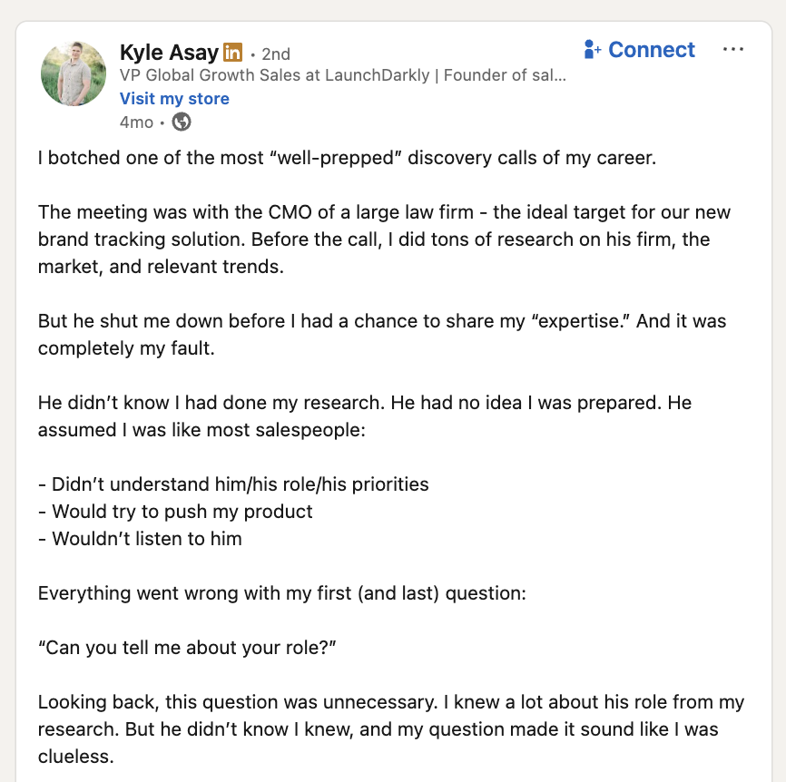
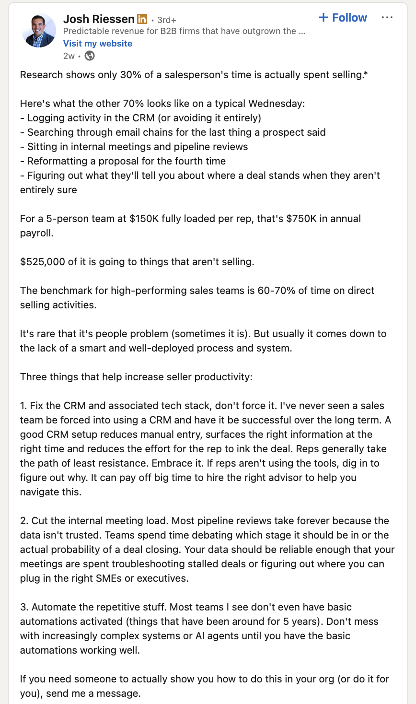

What we found. This week.
These are real posts and threads scraped from LinkedIn in the last 30 days. Each one maps directly to a use case Krisatwork solves. This is the type of signal we will harvest, classify, and engage with — at scale.

AE describes spending 3 hrs on admin before 10 contacts. "I wasn't an AE — I was a data entry clerk with a quota."

Founders + reps validating the same pain. High engagement signal.

VP Sales at LaunchDarkly shares how prep without signal-to-meeting flow cost him a CMO deal. 65 reactions.

GTM + sales practitioners engaging. Clear ICP audience in the comments.

30% of rep time actually spent selling. $525K of a 5-rep payroll going to non-selling tasks. Frames the system problem that Krisatwork solves at leadership level.